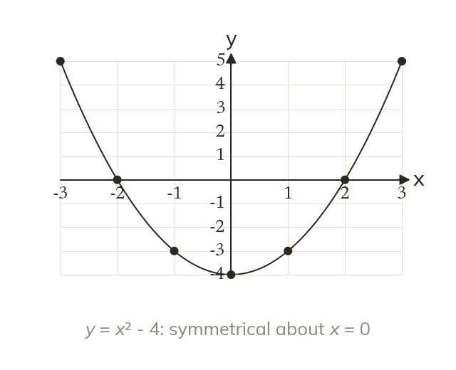

Curves need a table too
A table of values gives points for any equation. A quadratic draws a parabola, symmetrical about its turning point.
A table of values generates points for any equation, not only for linear ones. A quadratic, highest power gives a parabola, symmetrical about a vertical line through its turning point.